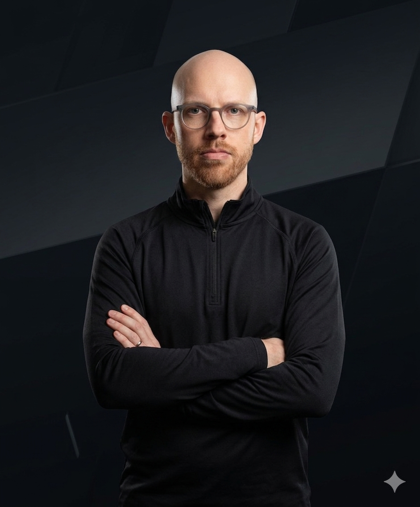

Rob
A founding member and one of the principal architects of the Super 8s, Rob has been around since the original 2013 WhatsApp conversation in which the idea of a mini-league was first floated.
He has subsequently developed the dual role of competitor and backroom operator, serving as the league's Vice Commissioner and taking on a substantial amount of the work behind the scenes.
Humorous Name United has been Rob's home throughout his Super 8s career, making him one of the competition's longest-serving one-club managers.